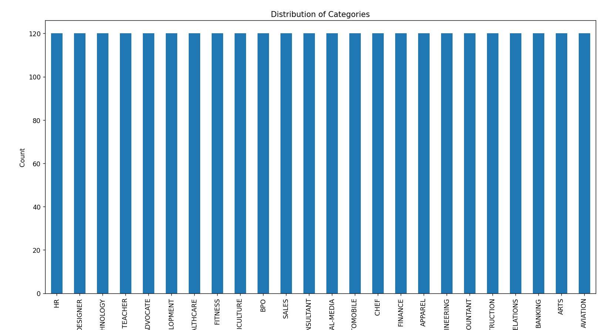
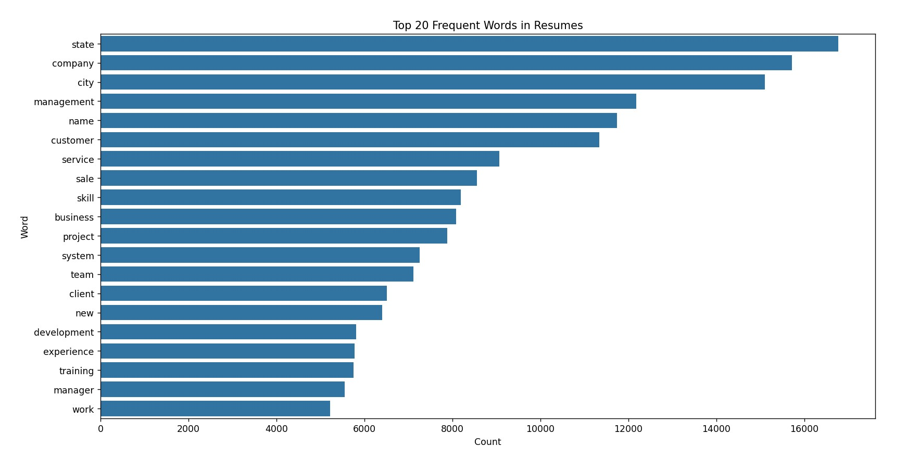
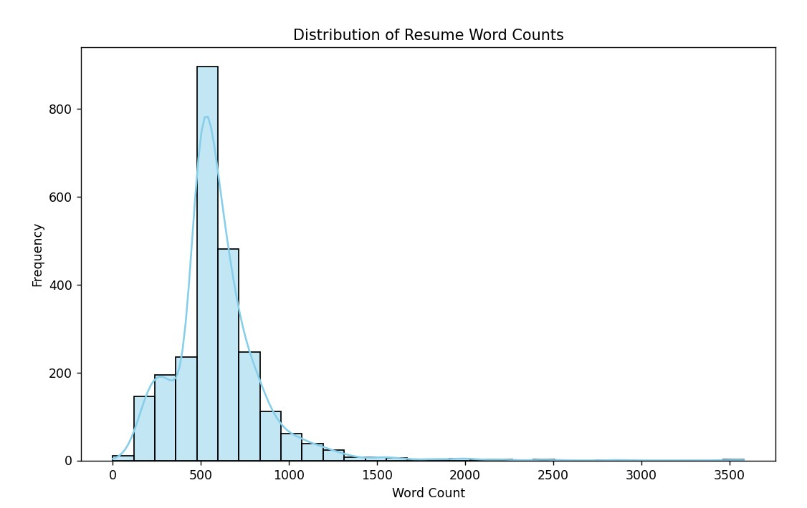

Resume Screening System
An NLP-based resume classification system that transforms unstructured resume text into structured job categories through text preprocessing, TF-IDF representation, machine-learning model comparison, and an interactive Streamlit application.

The Problem
Large collections of resumes contain unstructured textual information that can be time-consuming to organize and route manually. The challenge was to build a text-classification workflow capable of converting resume content into consistent job-category predictions while handling differences in writing style and category representation.
The Approach
- Analysis of a resume dataset containing 2,484 documents across 24 job categories.
- Text cleaning, normalization, stopword handling, and lemmatization using NLP preprocessing techniques.
- Exploratory analysis of resume categories and class distribution.
- WordNet-based synonym augmentation to improve representation of underrepresented categories.
- TF-IDF feature extraction to transform resume text into numerical document representations.
- Comparison of LightGBM, XGBoost, and Random Forest classifiers.
- Integration of the selected model into a Streamlit application supporting PDF upload and automatic categorization.
Technical Decisions
- TF-IDF was used to create an interpretable and efficient representation of resume text for classical machine-learning models.
- Data augmentation was applied at the text level to improve exposure to underrepresented resume categories.
- Multiple tree-based classifiers were compared rather than relying on a single model architecture.
- LightGBM was selected for the application after model comparison.
- The system is framed as document categorization and routing, not autonomous candidate selection or hiring.
Results
The final workflow supports PDF resume upload, text extraction, preprocessing, vectorization, and automatic categorization across 24 job classes through an interactive application.
Why It Matters
The project demonstrates how NLP and machine learning can transform unstructured documents into structured information that is easier to organize, search, and route. It also shows how a text-classification model can be integrated into a user-facing workflow rather than remaining only as a notebook experiment.
Project Evidence
Application-level evidence can demonstrate the complete document-processing workflow from resume upload through category prediction.
Project Evidence
Exploratory analysis of the resume dataset shows the class structure, dominant textual patterns, and document-length distribution used to inform preprocessing and model development.

Resume Categories
Distribution of the resume categories used in the multi-class classification workflow.

Frequent Resume Terms
Analysis of frequently occurring terms helps characterize common vocabulary patterns across the resume corpus before feature extraction.

Resume Length Distribution
Word-count analysis highlights variation in document length across the dataset and provides additional context for the preprocessing pipeline.
Need a Similar Solution?
If your project involves NLP, document classification, text processing, information extraction, or machine-learning applications, let’s discuss the problem and the right technical approach.